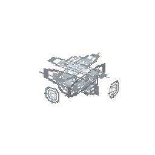

説明
①子ども 約10倍の電圧の電線。銅ケーブルより損失が 1/100。変圧器でつなぐ。
②学生 同じ電力を10倍の電圧で送ると電流は 1/10、電線の損失 I²R は 1/100：1本 0.01%、網あたり 10MW。機械は直接つなげない：変圧器で下げる。
③大人 1886年、スタンレーがアメリカのグレート・バリントンの町を、高い電圧で送って変圧器で下げた交流で照らした。⚠️ ゲームの 2000V はゲームの値。
④ガチ 裸の電線をガラスや磁器の碍子（がいし）で支える。電圧が高いほど碍子は大きい。今の送電線は数十万ボルト。
作り方
使い道
（このアイテムを使うレシピは無い）